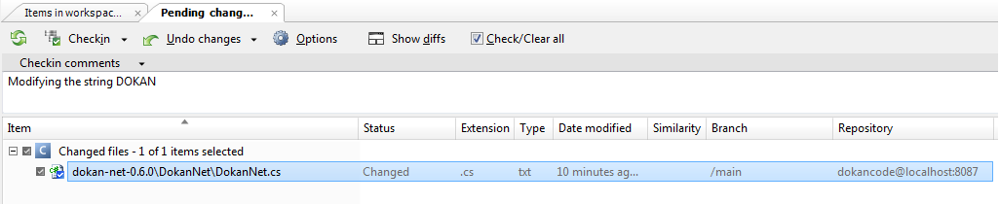

After hiding your diffs on the “hide diffs” button, you can introduce a comment from your second checkin and the file which status is “changed”. For example: “Replace DOKAN by DOKAN-NET string”.

Figure 1: Plastic SCM "Pending Changes" checkin